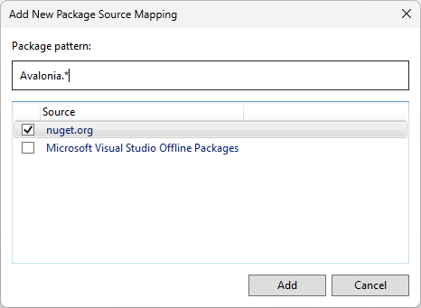
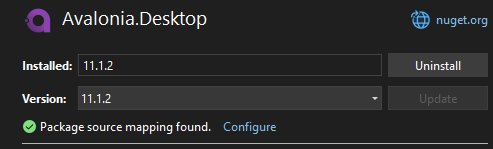

Visual Studio jumps to [decompiled] file instead of original source
When you create a default Avalonia (C#) project using the Visual Studio wizard, you may find that go to type definition option will open [decompiled] sources instead of the original files. This can be frustrating when you want to preview how Avalonia does things underneath. Let’s fix it.
Make sure you have the following options checked in Tools > Options:
Text Editor>C#>Advanced>Go To Definition- ✅ Enable navigation to Source Link and Embedded Sources
- ✅ Always use default symbol servers for navigation
Debugging>General- ✅ Enable source server support
- ✅ Enable Source Link support
If, despite checking these options, going to original sources does not work, the next step will be to add package to the filters, which will allow the IDE to download Avalonia sources.
Select nuget.org as a source for the sources Tools > Options > NuGet Package Manager > Package Sources
- ✅ nuget.org
Also, in Tools > Options > NuGet Package Manager > Package Source Mapping add the Avalonia.* rule.

Finally, click OK to save your changes.
You can now go to Project > Manage NuGet Packages... and under the Installed tab, select any Avalonia package. A green checkmark should appear in the window on the right with a text: Package source mapping found.

With some packages you may see this message instead
A package source mapping will be created.
This means that the sources are not downloaded in full and will be pulled as needed. It may happen that jumping to the type definition takes you to decompiled code. You should then wait a while and try jumping to the type again. If the sources are downloaded once, subsequent jumps will be instantaneous. Visual Studio saves the downloaded files in the %LocalAppData%\SourceServer directory.
Same procedure should apply to any other library.